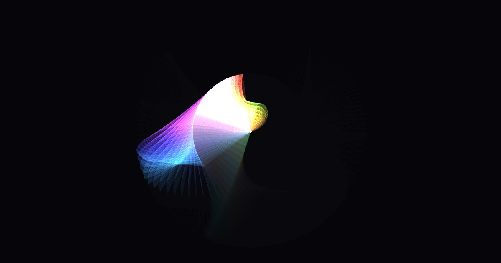
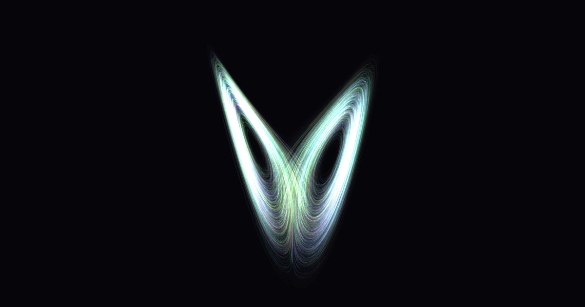
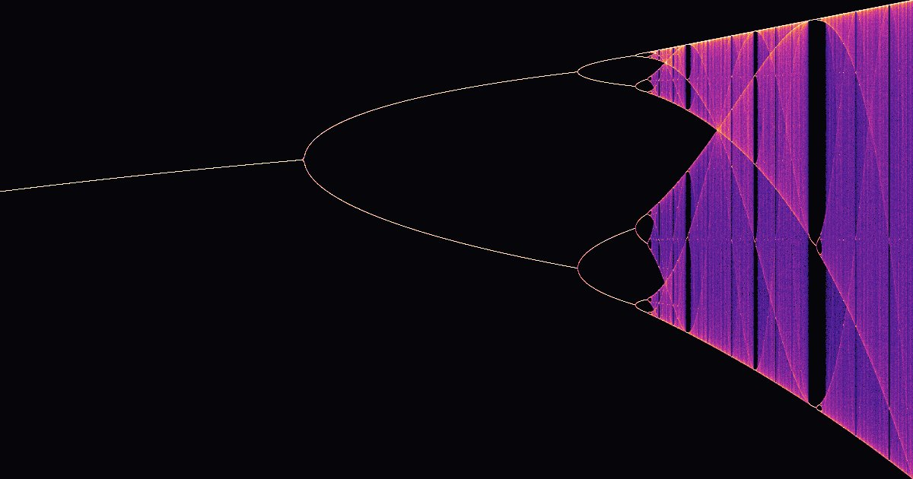

Generative Art
Math and physics, made into art you can play with. Every piece is a real simulation running in your browser: drag it, tweak it, save it, share it.
Season 1 · Chaos

Episode 1
Double Pendulum Chaos
1,000 pendulums start within a hundred-thousandth of a degree. Watch invisible differences become a rainbow.

Episode 2
Lorenz Attractor
A rounding error in 1961 revealed the butterfly effect, and a shape that looks like a butterfly.

Episode 3
The Logistic Map
One line of algebra about rabbits hides an infinite fractal. Zoom in forever.
Coming next: the three-body problem.